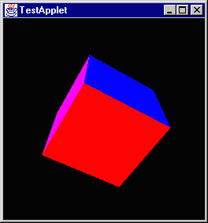
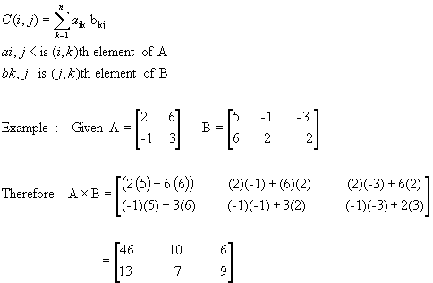
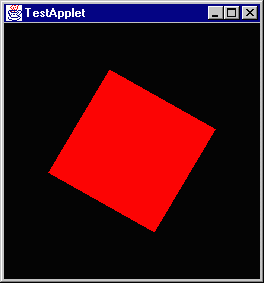
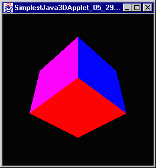
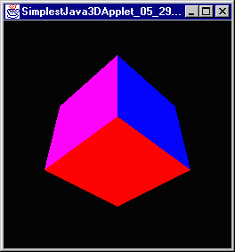

This brings me to the end of the section on scene graphs and behaviors and stuff. There are a series of questions to answer. I reckon I'll give them a spin.
-
In the program that multiplies two transforms together what would be the difference if you switched the order of the transforms?
I don't know really. let me try it and find out. I honestly don't know if matrix multiplication is a commutative property (commutative?, I mean a x b = b x a.) I'll compare these two scene graphs.
private BranchGroup createSceneGraph()
{
BranchGroup root = new BranchGroup();
Transform3D rotateX = new Transform3D();
rotateX.rotX(Math.toRadians(30));
Transform3D rotateZ = new Transform3D();
rotateZ.rotZ(Math.toRadians(60));
rotateX.mul(rotateZ);
TransformGroup rotationTransform = new TransformGroup(rotateX);
rotationTransform.addChild(new ColorCube(0.4));
root.addChild(rotationTransform);
return root;
}
and
private BranchGroup createSceneGraph()
{
BranchGroup root = new BranchGroup();
Transform3D rotateX = new Transform3D();
rotateX.rotX(Math.toRadians(30));
Transform3D rotateZ = new Transform3D();
rotateZ.rotZ(Math.toRadians(60));
rotateZ.mul(rotateX); // Note that these two are switched
TransformGroup rotationTransform = new TransformGroup(rotateZ); // and this is changed
rotationTransform.addChild(new ColorCube(0.4));
root.addChild(rotationTransform);
return root;
}
And the server that my compiler is on just went offline for whatever reason so I can't do diddly squat. I reckon I'll write the code to test these questions and then maybe I can get on to check them later.
Ok, time has passed and it is back now and yes, the order of transformations does matter as these two shots show.


-
In the program which has a two transform groups, one of which has an animation behavior attached, how does it affect rendering to switch the order of the transform groups?
I already did this one just for my own affectation. The cube consistently rotated along the same axis relative to its geometry regardless of how it was rotated.
-
Can you compile the rotation and the spin of the following program into one object?
private BranchGroup createSceneGraph()
{
BranchGroup root = new BranchGroup();
Transform3D xRotate = new Transform3D();
xRotate.rotX(Math.toRadians(30));
Transform3D zRotate = new Transform3D();
zRotate.rotZ(Math.toRadians(60));
xRotate.mul(zRotate);
TransformGroup xRotateGroup = new TransformGroup(xRotate);
TransformGroup rotateGroup = new TransformGroup();
rotateGroup.setCapability(TransformGroup.ALLOW_TRANSFORM_WRITE);
Alpha fourSecondAlpha = new Alpha(-1, 4000);
RotationInterpolator rotatorBehavior =
new RotationInterpolator(fourSecondAlpha, rotateGroup);
BoundingSphere bounds = new BoundingSphere();
rotatorBehavior.setSchedulingBounds(bounds);
root.addChild(rotateGroup);
rotateGroup.addChild(xRotateGroup);
rotateGroup.addChild(rotatorBehavior);
xRotateGroup.addChild(new ColorCube(0.4));
return root;
}
Umm, I certainly don't know how to. When I added rotation behavior to a TransformGroup that had transformation information in it the transformation information was ignored. I wouldn't think that they wouldn't ask the question if it wasn't possible, but I don't know how. I'll send Andy a message and ask him, maybe his knowledge includes how.
The usage of Transform3D is beginning to confuse me. I tried to change the axis of rotation using the following code and it didn't have any affect.
private BranchGroup createSceneGraph()
{
BranchGroup root = new BranchGroup();
Transform3D defaultAxis = new Transform3D();
defaultAxis.rotY(Math.toRadians(45)); // This has no apparent affect
TransformGroup rotateGroup = new TransformGroup();
rotateGroup.setCapability(TransformGroup.ALLOW_TRANSFORM_WRITE);
Alpha fourSecondAlpha = new Alpha(-1, 4000);
RotationInterpolator rotatorBehavior =
new RotationInterpolator(fourSecondAlpha, rotateGroup, defaultAxis,
(float)0, (float)(Math.PI * 2));
BoundingSphere bounds = new BoundingSphere();
rotatorBehavior.setSchedulingBounds(bounds);
root.addChild(rotateGroup);
rotateGroup.addChild(rotatorBehavior);
rotateGroup.addChild(new ColorCube(0.4));
return root;
}
So I want to write a little driver to find out what the information is inside of the thing by default. Apparently it contains a 3x3 matrix of floats representing something which I have as of yet to figure out. I'm going to print it out and maybe get a clue. Here is that program:
import javax.media.j3d.*;
import javax.vecmath.*;
public class MatrixPrint
{
public static void main(String [] arguments)
{
Matrix3f matrix = new Matrix3f();
Transform3D defaultTransform = new Transform3D();
defaultTransform.get(matrix);
System.out.println("\t|\t 1\t 2\t 3");
System.out.println("-----------------------------------");
System.out.println("1\t|\t" + matrix.m00 + "\t" + matrix.m01 + "\t" + matrix.m02);
System.out.println("2\t|\t" + matrix.m10 + "\t" + matrix.m11 + "\t" + matrix.m12);
System.out.println("3\t|\t" + matrix.m20 + "\t" + matrix.m21 + "\t" + matrix.m22);
}
}
And the result looks like this:
| 1 2 3
-----------------------------------
1 | 1.0 0.0 0.0
2 | 0.0 1.0 0.0
3 | 0.0 0.0 1.0
Now I know that thing is called an identity matrix but as for what that means I know very little. Maybe the web can provide some help.
Ok, this matrix is the identity matrix and what it is good for (well I don't know that this is useful;) a property of the identity matrix is that any matrix multiplied by this matrix produces the same matrix. A * I = A = I * A. I got this little spiel on matrix multiplication:
Now I'll see if I can explain matrix multiplication to you. Let's say we
have two matrices A and B:
1 2 2 3 4 5
4 7 6 5 9 9
5 6 0 2 7 3
A B
To multiply them together, we take a row from A and a column from B and
multiply each entry in the row and the column together, and then add up what
we get. The result will be a new 3x3 matrix:
1*3 + 2*5 + 2*2 1*4 + 2*9 + 2*7 1*5 + 2*9 + 2*3 17 36 29
4*3 + 7*5 + 6*2 4*4 + 7*9 + 6*7 4*5 + 7*9 + 6*3 = 59 121 101
5*3 + 6*5 + 0*2 5*4 + 6*9 + 0*7 5*5 + 6*9 + 0*3 45 74 79
A*B A*B
Notice that multiplication of matrices isn't commutative: if you multiply
B*A you'll get something completely different, so A*B doesn't equal B*A.
Also notice that you can't multiply a 3x4 matrix by a 5x2 matrix. If you
have a something-by-n matrix, you can only multiply it on the right by an
n-by-something-else matrix. By the way, I think multiplication of matrices
is something you'd understand a lot better if you got someone to actually
show it to you, instead of trying to just tell you like I did.
Makes sense to me. I don't have a clue what it would be useful for, but it makes sense.
-
Use this code to perform a translation:
Transform3D translate = new Transform3D();
Vector3f translationVector = new Vector3f((float)0, (float)1, (float)0);
translate.setTransform(translationVector);
If you change the position of the translation in the scene graph do you expect to see a change? Absolutely; it is the same as asking if turn 45°, walk 2 meters, turn 90°, walk 1 meter is the same as turn 135°, walk 3 meters or walk 3 meters, turn 135°. Each one will put you at a different point as should positioning the transformation differently. I will use the two following test scene graphs:
Friday, June 4, 1999 8:39 AM
I am going to take a brief sabbatical from the tutorial and move off for a bit into the actual work that Andy did this last semester. I am not to a point yet where I am going to understand all that he did but I am going to see if I can get a rough grasp. Honestly I am getting bogged down in these transformation matrices and I don't know what they mean and I want out from under it for a bit.
As I understand it at this point Andy's class structure lines up like this:
-
simpleLayout.java - The basic layout for the applet. At this point it contains a Parser, a factory floor and a button. Also within the factory floor there is a robot who is registered as a listener for movement requests from the parser.
-
FactoryFloor.java - This is the basic scene as it appears in the factory floor part of the applet. It includes a robot object and a floor object.
-
Floor.java - This is simply a grid. The robot sits on this in the applet.
-
Robot.java - This is the actual robot. I am going to run through this code in greater depth here in a minute. It contains a set of cylinders and a set of joints as well as a claw.
-
Joint.java - This represents a joint in the robot. It is an extension of BranchGroup (the first that I have seen thus far, I thought that doing that would be more common.) It looks like a complicated class though and I'll worry about it later.
-
Claw.java -his is the claw at the end of the robot. I will look at it later too.
-
Axis.java - This is a set of cylinders centered on a point and extending along each axis, X, Y and Z.
-
Block.java - This is apparently a ColorCube that you can change the colors of the sides, but it doesn't appear to be used in the robot code.
The first thing that I am going to do is run through robot.java line by line and see if I can construct a logical picture of what it is doing.
He starts out including the usual files.
import javax.media.j3d.*;
import javax.vecmath.*;
import java.lang.*;
import Joint;
import Axis;
import Block;
import com.sun.j3d.utils.geometry.Cylinder;
import com.sun.j3d.utils.geometry.Sphere;
import java.awt.event.*;
Then he creates a default constructor:
public class Robot implements MovementRequestListener {
And he creates the geometry that he will need to build the scene graph:
private BranchGroup RobotBase = new BranchGroup();//the root of the scenegraph
private TransformGroup RobotBaseTG = new TransformGroup();//Transform from root to first node
private Appearance ltBlue = new Appearance();//a light blue appearance
private Appearance dkBlue = new Appearance();//a darker blue appearance
private Joint Joint0;//Joint object representing the 0th joint
private Joint Joint1;//Joint object representing the 1st joint
private Joint Joint2;//Joint object representing the 2nd joint
private Joint Joint3;//Joint object representing the 3rd joint
private Joint Joint4;//Joint object representing the 4th joint
private Joint Joint5;//Joint object representing the 5th joint
private Joint Joint6;//Joing object representing the 6th joint
Claw claw;//a Claw object that is the end effector for this robot
Now he declares a function within the class which sets the ALLOW_CHILDREN_WRITE capability on a specified group.
final private void addWriteCap(Group temp) {
temp.setCapability(Group.ALLOW_CHILDREN_WRITE);
}
This function is equivalent to Math.toRadians(int degrees). I reckon he didn't know about that.
final private float degToRad(float deg) {
return (float)(deg * 2 * Math.PI / 360);
}
This class that sets up his scene graph I think. He identifies the variable as such:
- tempM: a Matrix3f which is the rotations necessary to place the 0th joint where needs to be.
- LinkXT: The Transform3D object corresponding to LinkX
- LinkXTG: The TransformGroup object corresponding to LinkX
- Link0: The geometry for the cylinder which supports the robot
- Link0a: The wide cylinder that Link0 seems to be anchored to. It sits on the floor
- Link1: The cylinder extending horizontally from Link0. Link2 attaches to it.
- Link2: The box that is the upper arm.
- Link3a: Cylinder to cover the space between Link2 and Link3.
- Link3: The box that is the lower arm.
- Link4: The sphere which covers the gap between Link3 and the EE
private void buildRobot() {
RobotBase.setCapability(BranchGroup.ALLOW_CHILDREN_WRITE);
RobotBaseTG.setCapability(TransformGroup.ALLOW_TRANSFORM_WRITE
| TransformGroup.ALLOW_PICK
| TransformGroup.ALLOW_PICKABLE_WRITE
| TransformGroup.ALLOW_PICKABLE_READ
);
addWriteCap(RobotBaseTG);
Matrix3f tempM = new Matrix3f(0f, 1f, 0f,
0f, 0f, 1f,
1f, 0f, 0f);
Joint0 = new Joint(tempM, new Vector3f(0f, .6604f, 0f));
Joint1 = new Joint(((float)(Math.PI / 2)), (-(float)(Math.PI / 2)), 0, 0, -160, 160);
Joint2 = new Joint(0f, 0f, .432f, .1495f, -225, 45);
Joint3 = new Joint(((float)(Math.PI / 2)), ((float)(Math.PI / 2)), 0f, 0f, -45, 225);
Joint4 = new Joint(0f, (-(float)(Math.PI / 2)), 0f, .432f, -110, 170);
Joint5 = new Joint(0f, ((float)(Math.PI / 2)), 0f, 0f, -100, 100);
Joint6 = new Joint(0f, 0f, 0f, .0565f, -266, 266);
//build the links...
//starting with the base
Transform3D Link0T = new Transform3D();
Link0T.rotX((float)(Math.PI * .5));
Link0T.setTranslation(new Vector3f(0f, 0f, -.3302f));
TransformGroup Link0TG = new TransformGroup(Link0T);
addWriteCap(Link0TG);
Cylinder Link0 = new Cylinder(.07f, .6604f, ltBlue);
Link0TG.addChild(Link0);
//then the short cylinder around the bottom of the base
Cylinder Link0a = new Cylinder(.3f, .1f, dkBlue);
Transform3D Link0aT = new Transform3D();
Link0aT.rotX((float)(Math.PI * .5));
Link0aT.setTranslation(new Vector3f(0f, 0f, -.6104f));
TransformGroup Link0aTG = new TransformGroup(Link0aT);
addWriteCap(Link0aTG);
Link0aTG.addChild(Link0a);
//Link1, aka Shoulder
Transform3D Link1T = new Transform3D();
Link1T.rotX(-(float)(Math.PI * .5));
Link1T.setTranslation(new Vector3f(0f, 0f, ((float)(.1495 * .5))));
TransformGroup Link1TG = new TransformGroup(Link1T);
addWriteCap(Link1TG);
Cylinder Link1 = new Cylinder(.07f, (float)(2*.1495), dkBlue);
Link1TG.addChild(Link1);
//now for the second link -- upper arm...
Transform3D Link2T = new Transform3D();
Link2T.setTranslation(new Vector3f((-(float)(.4325 * .5)), 0f, 0f));
TransformGroup Link2TG = new TransformGroup(Link2T);
addWriteCap(Link2TG);
Block Link2 = new Block((float)(.4325 * .5), .09f, .07f, ltBlue);
Link2TG.addChild(Link2);
//add link3A....a thingy to cover up the weird joint....
Transform3D Link3aT = new Transform3D();
Link3aT.rotX((float)(Math.PI * .5));
Cylinder Link3a = new Cylinder(.07f, .15f, dkBlue);
TransformGroup Link3aTG = new TransformGroup(Link3aT);
addWriteCap(Link3aTG);
Link3aTG.addChild(Link3a);
//and Link3...
Transform3D Link3T = new Transform3D();
Link3T.setTranslation(new Vector3f(0f, (float)(.4325 * .5), 0f));
TransformGroup Link3TG = new TransformGroup(Link3T);
addWriteCap(Link3TG);
Block Link3 = new Block(.07f, (float)(.4325 * .5), .06f, ltBlue);
Link3TG.addChild(Link3);
// add link4...the sphere to which the EE attaches
Transform3D Link4T = new Transform3D();
TransformGroup Link4TG = new TransformGroup(Link4T);
addWriteCap(Link4TG);
Sphere Link4 = new Sphere(((float)(.0565)), dkBlue);
Link4TG.addChild(Link4);
//next, string all the joints together...
RobotBaseTG.addChild(Joint0);
Joint0.getTransformGroup().addChild(Joint1);
Joint1.getTransformGroup().addChild(Joint2);
Joint2.getTransformGroup().addChild(Joint3);
Joint3.getTransformGroup().addChild(Joint4);
Joint4.getTransformGroup().addChild(Joint5);
Joint5.getTransformGroup().addChild(Joint6);
//then add the links to the joints...
Joint0.getTransformGroup().addChild(Link0TG);
Joint0.getTransformGroup().addChild(Link0aTG);
Joint1.getTransformGroup().addChild(Link1TG);
Joint2.getTransformGroup().addChild(Link2TG);
Joint2.getTransformGroup().addChild(Link3aTG);
Joint4.getTransformGroup().addChild(Link3TG);
Joint5.getTransformGroup().addChild(Link4TG);
//then add the claw
claw = new Claw(ltBlue, dkBlue);
Joint6.getTransformGroup().addChild(claw.getClawBG());
//and finally add the whole tree to the root of the robot graph
RobotBase.addChild(RobotBaseTG);
}
It looks really complicated but I think that by and large that is just because of the amount of information. All that he is doing is building a scene graph.
This next function sets the color attributes for his colors.
private void keepUpAppearances() {
ltBlue.setColoringAttributes(new ColoringAttributes(.5f, .6f, .7f, 0));
dkBlue.setColoringAttributes(new ColoringAttributes(0f, 0f, 1.0f, 100));
}
This is just an accessor method for the base of the robot.
public BranchGroup getRobotGraph() {
return RobotBase;
}
This next function I know fairly well because it is the required by my parser. This just allows the robot to handle movement requests.
public void movementRequested(MovementRequestEvent e) {
switch(e.getID()) {
case MovementRequestEvent.ROTATE:
//this one causes the robot to rotate the specified angles and appear at the new position
Joint1.addTheta(e.arg[0]);
Joint2.addTheta(e.arg[1]);
Joint3.addTheta(e.arg[2]);
Joint4.addTheta(e.arg[3]);
Joint5.addTheta(e.arg[4]);
Joint6.addTheta(e.arg[5]);
break;
/*case MovementRequestEvent.ROTATE:
//this will eventually be an animated version of ROTATE
Joint0.moveJoint(e.arg[0]);
Joint1.moveJoint(e.arg[1]);
Joint2.moveJoint(e.arg[2]);
Joint3.moveJoint(e.arg[3]);
Joint4.moveJoint(e.arg[4]);
Joint5.moveJoint(e.arg[5]);
break;
case MovementRequestEvent.MOVETO:
//this takes care of moving to a particular point
processVector(stuff......);
break;
*/
case MovementRequestEvent.RESET:
//this will return the robot to its original position
Joint1.reset();
Joint2.reset();
Joint3.reset();
Joint4.reset();
Joint5.reset();
Joint6.reset();
break;
case MovementRequestEvent.TOGGLEAXIS:
//this one toggles a visual representation of the axis for each joint of the robot
switch(e.arg[0]) {
case 0:
Joint0.toggleAxis();
break;
case 1:
Joint1.toggleAxis();
break;
case 2:
Joint2.toggleAxis();
break;
case 3:
Joint3.toggleAxis();
break;
case 4:
Joint4.toggleAxis();
break;
case 5:
Joint5.toggleAxis();
break;
case 6:
Joint6.toggleAxis();
break;
}
break;
}
}
private Transform3D processVector(float x, float y, float z, float aboutX, float aboutY, float aboutZ) {
/*Written by Andy Trent
Input: x:the new x coordinate for the EE
y:the new y coordinate for the EE
z:the new z coordinate for the EE
aboutX:Any rotation about the X-axis for the new position
aboutY: Any rotation about the Y-axis for the new position
aboutZ: Any rotation about the Z-axis for the new position
Output: returns a Transform3D that is a transformation to the new coordinate frame of joint6
Variables:Xrot: Transform3D with the new X rotation matrix
Yrot: Transform3D with the new Y rotation matrix
Zrot: Transform3D with the new Z rotation matrix
result: Transform3D built from all the rotations and the translation
This method takes the parameters of the new position for the EE and creates a transformation
to that point. This will later be input into the inverse kinematics algorithm to compute the
path.*/
Transform3D Xrot = new Transform3D();
Transform3D Yrot = new Transform3D();
Transform3D Zrot = new Transform3D();
Transform3D result = new Transform3D();
Xrot.rotX(degToRad(aboutX));
Yrot.rotY(degToRad(aboutY));
Zrot.rotZ(degToRad(aboutZ));
result.mul(Xrot);
result.mul(Yrot);
result.mul(Zrot);
result.setTranslation(new Vector3f(x, y, z));
return result;
}
public Robot() {
/*Written by Andy Trent
Input: none
Output: None
This is the constructor for the robot. It builds the scene-graph and sets up the colors.
From that point, the robot just sits and waits for events.*/
keepUpAppearances();
buildRobot();
}
}
Umm, nevermind on the starting this now, I'll do a bit more math learning first.
How about this:
To translate a point (x, y, z) by the vector
x' 1 0 0 tx x
y' = 0 1 0 ty x y
z' 0 0 1 tz z
w' 0 0 0 1 1
Interesting eh, how about this:
Scaling matrix:
sx 0 0 0
0 sy 0 0
0 0 sz 0
0 0 0 1
Transformation matrix:
1 0 0 0
0 cos T -sin T 0
0 sin T cos T 0
0 0 0 0
Sunday, June 6, 1999 12:40 PM
Ok, I'm getting bit spastic and branching off into too much stuff without sufficient focus to get much accomplished. I am going to talk just about 3D graphics math for a bit. I went into the library yesterday and got the book Fundamentals of Three-dimensional Computer Graphics, written in 1989 by Alan Watt. The book, as I expected begins with an explanation of transformation matrices. I am going to go throught that and summarize.
Transformation matrices are used to deal with a subset of transformations known as linear transformations. The most common linear transformations are translation (changing position,) scaling (changing size,) and rotation (changin orientation.) Java 3d uses what is called a right handed coordinate system. The +X-axis heads off the screen to the right, the +Y-axis goes straight up, and the +Z-axis comes out of the screen at the viewer.
That is the base coordinate system at least. Transformations on the base coordinate system produce not only new points but also a new coordinate system. This is useful for modeling for several reasons. Take this robot project for instance, we have an arm comprised of 6 joints. For simplicity sake lets think of it for a minute as a human are which has three main joints: the shoulder, the elbow and the wrist. Let's say you are dealing with the hand, the hand could be defined in relation to the shoulder, but that isn't necessarily the best way to do it. As I am sitting here typing my arms are moving at my shoulder some, but it is not affecting the position of my hands becasue my elbow and writs are compensating and keeping my hands in the same position. If my hands are defined in relation to my wrist however when I change the position of my wrist I change the position of my hand or at the lest I change the angle. The way that the robot is set up each joint is defined in a coordinate system relative to the joint before it.
I hope that made sense, I'll talk more about it later and try to draw some pictures.
As I said earlier the most common operations in three-dimensional graphics are translation, scaling and rotation. These functions are represneted with the following equations performed on the point V(x, y, z) to get the new transformed point V'(x', y', z').
- translation - V' = V + D where D is a translation vector D(Tx, Ty, Tz)
- scaling - V' = V * S where S is a scaling matrix
- rotation - V' = V * R where R is a rotaiton matrix
A new coordinate system was developed so the these three types of transforms could be represented uniformly. Called homogenous coordinates, the point P(x, y, z) is represented as P(X, Y, Z, w) for w not = 0. x = X / w, y = Y / w, z = Z / w. w is called the scaling factor and for computer graphics it is always taken to be 1, so when w = 1 x = X, y = Y, and z = Z.
The idea of a identity matrix comes into play again. Recall that an identity matrix is a (square?) matrix of all 0's except for the top-left to bottom-right diagonal which as all 1's. In matrix multiplication a matrix multiplied by an identity matrix of the appropriate size will produce that matrix again; A * I = A = I * A.
To briefly touch on multiplying matrices since I have never done this before. Here is a brief tutorial on matrices that a pulled from mathoracle.com. The part on multiplying is this:
Matrix Multiplication: Given a matrix A with dimension mxn and another matrix B with dimension nxr, the product C = A x B of matrices is mxr matrix whose element [element in ith row, jth column] is product of ith row of A and jth column of B.

A homogemnous coordinate V(x, y, z, w) can be represented as a 1x4 matrix:
[x, y, z, w]
and since in 3d graphics w is always 1 a point in the scene can be represented as:
[x, y, z, 1]
A transform from point V to V' can be written as V' = V * M where M is the transformation matrix. I mentioned this earier, but the form of transformation matrices is this:
-
To apply a translation the matrix looks like:
1 0 0 0
0 1 0 0
0 0 1 0
Tx Ty Tz 1
You will notice that this is just an identity matrix witht he last line replaced by the coordinate matrix for the position of the new point relative to the origin. The multiplication would end up being:
- -
| 1 0 0 0|
[x, y, z, 1] * | 0 1 0 0|
| 0 0 1 0|
| Tx Ty Tz 1|
- -
= [x*1+y*0+z*0+1*Tx x*0+y*1+z*0+1*Ty x*0+y*0+z*1+1*Tz x*0+y*0+z*0+1*1]
= [x+Tx y+Ty z+Tz 1]
which makes perfect sense though in the future matrices other than 1xn will be done without the binding brackets since they are such a pain to draw.
-
To scale by the scaling factors Sx, Sy, and Sz the matrix would look like this:
Sx 0 0 0
0 Sy 0 0
0 0 Sz 0
0 0 0 1
The math again (which I do to get a hang of multipling matrices as much as anything) is:
- -
| Sx 0 0 0|
[x, y, z, 1] * | 0 Sy 0 0|
| 0 0 Sz 0|
| 0 0 0 1|
- -
= [x*Sx+y*0+z*0+1*0 x*0+y*Sy+z*0+1*0 x*0+y*0+z*Sz+1*0 x*0+y*0+z*0+1*1]
= [x*Sx y*Sy z*Sz 1]
which is again about like you would expect it to be. For uniform scalings of course Sx = Sy = Sz.
-
Rotation transformations are a bit more complicated. They vary according to the axis along which the rotation is being transformed.
-
x-axis rotation -> 1 0 0 0
0 cosT sinT 0
0 -sinT cosT 0
0 0 0 1
-
y-axis rotation -> cosT 0 -sinT 0
0 1 0 0
sinT 0 cosT 0
0 0 0 1
-
z-axis rotation -> cosT sinT 0 0
-sinT cosT 0 0
0 0 1 0
0 0 0 1
where T is the angle being rotated by in radians. I'll do their mathematical equivalents in short form:
-
x-rotation ->
[x*1+y*0+z*0+1*0 x*0+y*cosT+z*-sinT+1*0 x*0+y*sinT+z*cosT+1*0 x*0+y*0+z*0+1*1]
= [x y*cosT+z*-sinT y*sinT+z*cosT 1]
-
y-rotation ->
[x*cosT+y*0+z*sinT+1*0 x*0+y*1+z*0+1*0 x*-sinT+y*0+z*cosT+1*0 x*0+y*0+z*0+1*1]
= [x*cosT+z*sinT y y*-sinT+z*cosT 1]
-
z-rotation ->
[x*cosT+y*-sinT+z*0+1*0 x*sinT+y*cosT+z*1+1*0 x*0+y*0+z*1+1*0 x*0+y*0+z*0+1*1]
= [x*cosT+y*-sinT x*sinT+y*cosT z 1]
The use homogenous coordinates allows all transformations to be of the form V * M = V' where V is the original point, M is the transformation matrix and V' is the new point. As java3d has already suggested transformations may be combined.
for:
[x' y' z' w'] = [x y z w] * M1
and
[x'' y'' z'' w''] = [x' y' z' w'] * M2
and
M3 = M1 * M2
then
[x'' y'' z'' w''] = [x y z w] * M3
As I have mentioned before matrix multiplications are not commutative so M1 * M2 != M2 * M1. So paying attention to the order matters.
The general form for a transformation matrix is this:
A11 A12 A13 0
A21 A22 A23 0
A31 A32 A33 0
Tx Ty Tz 1
Where the 3x3 upper left submatrix A specifies the net scaling and rotation and the 1x3 bottom left submatrix T specifies the translation.
Another explanation of the transformation matrix is this: (thank you to Mr. Matt Estes for this)
Xx Yx Zx 0
Xy Yy Zy 0
Xz Yz Zz 0
Wx Wy Wz 1
Where each of the columns X, Y and Z define an axis for a coordinate space and each is assumed to be a normal for that axis so an object drawn in them will have a whatever their length is as 1 unit. The bottom row W then is the origin of this coordinate system relative to the origin. The essence of the two explanations is the same and each will affect an object in the same way.
I am going to do another quick test driver program and theorize what its output ought to be and see if I can guess. I wrote one earlier that got a 3x3 matrix which I assume is the the net scaling and rotation. I am going to get the 4x4 now and check it.
import javax.media.j3d.*;
import javax.vecmath.*;
public class MatrixPrint
{
public static void main(String [] arguments)
{
Matrix4d matrix = new Matrix4d();
Transform3D transform = new Transform3D();
transform.get(matrix);
System.out.println("Initial matrix:");
printMatrix(matrix);
System.out.println("");
transform.rotX(Math.toRadians(90));
transform.get(matrix);
System.out.println("Post 90 rotate on X");
printMatrix(matrix);
System.out.println("");
transform.rotY(Math.toRadians(90));
transform.get(matrix);
System.out.println("Post 90 rotate on Y");
printMatrix(matrix);
System.out.println("");
transform.rotZ(Math.toRadians(90));
transform.get(matrix);
System.out.println("Post 90 rotate on Z");
printMatrix(matrix);
System.out.println("");
}
public static void printMatrix(Matrix3f matrix)
{
System.out.println("\t|\t 1\t 2\t 3");
System.out.println("-----------------------------------");
System.out.println("1\t|\t" + matrix.m00 + "\t" + matrix.m01 + "\t" + matrix.m02);
System.out.println("2\t|\t" + matrix.m10 + "\t" + matrix.m11 + "\t" + matrix.m12);
System.out.println("3\t|\t" + matrix.m20 + "\t" + matrix.m21 + "\t" + matrix.m22);
}
public static void printMatrix(Matrix4d matrix)
{
System.out.println("\t|\t 1\t 2\t 3\t 4");
System.out.println("-----------------------------------------------------");
System.out.println("1\t|\t" + matrix.m00 + "\t" + matrix.m01
+ "\t" + matrix.m02 + "\t" + matrix.m03);
System.out.println("2\t|\t" + matrix.m10 + "\t" + matrix.m11
+ "\t" + matrix.m12 + "\t" + matrix.m13);
System.out.println("3\t|\t" + matrix.m20 + "\t" + matrix.m21
+ "\t" + matrix.m22 + "\t" + matrix.m23);
System.out.println("4\t|\t" + matrix.m30 + "\t" + matrix.m31
+ "\t" + matrix.m32 + "\t" + matrix.m33);
}
}
My guesstamates are pretty straight forward, all I have to do is remember what sin(90°) and cos(90°) is... I think it's 1 and 0 respectively so they ought to come out like this:
1 0 0 0 1 0 0 0 0 0 -1 0 0 1 0 0
0 1 0 0 0 0 1 0 0 1 0 0 -1 0 0 0
0 0 1 0 0 -1 0 0 1 0 0 0 0 0 1 0
0 0 0 1 0 0 0 1 0 0 0 1 0 0 0 1
How did they actually come out?
Initial matrix:
| 1 2 3 4
-----------------------------------------------------
1 | 1.0 0.0 0.0 0.0
2 | 0.0 1.0 0.0 0.0
3 | 0.0 0.0 1.0 0.0
4 | 0.0 0.0 0.0 1.0
Post 90 rotate on X
| 1 2 3 4
-----------------------------------------------------
1 | 1.0 0.0 0.0 0.0
2 | 0.0 6.123233995736766E-17 -1.0 0.0
3 | 0.0 1.0 6.123233995736766E-17 0.0
4 | 0.0 0.0 0.0 1.0
Post 90 rotate on Y
| 1 2 3 4
-----------------------------------------------------
1 | 6.123233995736766E-17 0.0 1.0 0.0
2 | 0.0 1.0 0.0 0.0
3 | -1.0 0.0 6.123233995736766E-17 0.0
4 | 0.0 0.0 0.0 1.0
Post 90 rotate on Z
| 1 2 3 4
-----------------------------------------------------
1 | 6.123233995736766E-17 -1.0 0.0 0.0
2 | 1.0 6.123233995736766E-17 0.0 0.0
3 | 0.0 0.0 1.0 0.0
4 | 0.0 0.0 0.0 1.0
Let me translate those and round the 6*10^-17 to 0.
Projected:
1 0 0 0 1 0 0 0 0 0 -1 0 0 1 0 0
0 1 0 0 0 0 1 0 0 1 0 0 -1 0 0 0
0 0 1 0 0 -1 0 0 1 0 0 0 0 0 1 0
0 0 0 1 0 0 0 1 0 0 0 1 0 0 0 1
Actual:
1 0 0 0 1 0 0 0 0 0 1 0 0 -1 0 0
0 1 0 0 0 0 -1 0 0 1 0 0 1 0 0 0
0 0 1 0 0 1 0 0 -1 0 0 0 0 0 1 0
0 0 0 1 0 0 0 1 0 0 0 1 0 0 0 1
I was right on except that the signs are wrong on all the ones. I wonder why. I think I'll try a rotate on 45° for each axis.
Ok, I tried it for the cases (sinT, cosT) -> 50° (+,+), 170° (+,-), 210° (-,-), and 300° (-,+) and in all cases the sin figure was the negative of what it was supposed to be. I updated the driver program a bit to speed testing up; I made it so the angle to rotate by could be put on the command line and I fixed it so the numbers were truncated at two decimal places so they fit in columns right. Here is that code:
import javax.media.j3d.*;
import javax.vecmath.*;
import java.text.*;
public class MatrixPrint
{
protected static DecimalFormat twoDigitFormat = new DecimalFormat();
public static void main(String [] arguments)
{
Matrix4d matrix = new Matrix4d();
Transform3D transform = new Transform3D();
int angle = 0;
twoDigitFormat.setMaximumFractionDigits(2);
twoDigitFormat.setMinimumFractionDigits(2);
if(arguments.length == 1)
try
{
angle = Integer.parseInt(arguments[0]);
}
catch(NumberFormatException e)
{
System.out.println(arguments[0] + " is not a valid measure");
}
transform.get(matrix);
System.out.println("Initial matrix:");
printMatrix(matrix);
System.out.println("");
transform.rotX(Math.toRadians(angle));
transform.get(matrix);
System.out.println("Post " + angle + " rotate on X");
printMatrix(matrix);
System.out.println("");
transform.rotY(Math.toRadians(angle));
transform.get(matrix);
System.out.println("Post " + angle + " rotate on Y");
printMatrix(matrix);
System.out.println("");
transform.rotZ(Math.toRadians(angle));
transform.get(matrix);
System.out.println("Post " + angle + " rotate on Z");
printMatrix(matrix);
System.out.println("");
}
public static void printMatrix(Matrix3f matrix)
{
System.out.println("\t|\t 1\t 2\t 3");
System.out.println("-----------------------------------");
System.out.println("1\t|\t"
+ twoDigitFormat.format(matrix.m00) + "\t"
+ twoDigitFormat.format(matrix.m01) + "\t"
+ twoDigitFormat.format(matrix.m02));
System.out.println("1\t|\t"
+ twoDigitFormat.format(matrix.m10) + "\t"
+ twoDigitFormat.format(matrix.m11) + "\t"
+ twoDigitFormat.format(matrix.m12));
System.out.println("1\t|\t"
+ twoDigitFormat.format(matrix.m20) + "\t"
+ twoDigitFormat.format(matrix.m21) + "\t"
+ twoDigitFormat.format(matrix.m22));
}
public static void printMatrix(Matrix4d matrix)
{
System.out.println("\t|\t 1\t 2\t 3\t 4");
System.out.println("-----------------------------------------------------");
System.out.println("1\t|\t"
+ twoDigitFormat.format(matrix.m00) + "\t"
+ twoDigitFormat.format(matrix.m01) + "\t"
+ twoDigitFormat.format(matrix.m02) + "\t"
+ twoDigitFormat.format(matrix.m03));
System.out.println("1\t|\t"
+ twoDigitFormat.format(matrix.m10) + "\t"
+ twoDigitFormat.format(matrix.m11) + "\t"
+ twoDigitFormat.format(matrix.m12) + "\t"
+ twoDigitFormat.format(matrix.m13));
System.out.println("1\t|\t"
+ twoDigitFormat.format(matrix.m20) + "\t"
+ twoDigitFormat.format(matrix.m21) + "\t"
+ twoDigitFormat.format(matrix.m22) + "\t"
+ twoDigitFormat.format(matrix.m23));
System.out.println("1\t|\t"
+ twoDigitFormat.format(matrix.m30) + "\t"
+ twoDigitFormat.format(matrix.m31) + "\t"
+ twoDigitFormat.format(matrix.m32) + "\t"
+ twoDigitFormat.format(matrix.m33));
}
}
I understand what is happening but I honestly don't know what is going on. It may well be that they are just using a different set of equations. I'll try transformations using both matrices tomorrow and see how they compare.
Monday, June 7, 1999 8:21 AM
Ok, my first order of business for the day is to compare the transformations that I got out of the book that I am working in to the transformations that I am getting when I test what java3d is doing. The difference between the two is that java3d seems to have the opposite sign on the sine function.
The book said:
X-axis rotation Y-axis rotation Z-axis rotation
1 0 0 0 cosT 0 -sinT 0 cosT sinT 0 0
0 cosT sinT 0 0 1 0 0 -sinT cosT 0 0
0 -sinT cosT 0 sinT 0 cosT 0 0 0 1 0
0 0 0 1 0 0 0 1 0 0 0 1
Whereas java3d is actually doing:
X-axis rotation Y-axis rotation Z-axis rotation
1 0 0 0 cosT 0 sinT 0 cosT -sinT 0 0
0 cosT -sinT 0 0 1 0 0 sinT cosT 0 0
0 sinT cosT 0 -sinT 0 cosT 0 0 0 1 0
0 0 0 1 0 0 0 1 0 0 0 1
What I am going to do is write a quick program which specifies the transformation matrix directly and compare the results. I am going to simulate a 30° rotate on the z axis. The two transforms ought to look like this: (sin 30° = .5, cos 30° = .866 (approximately))
book java3d
.86 .5 0 0 .86 -.5 0 0
-.5 .86 0 0 .5 .86 0 0
0 0 1 0 0 0 1 0
0 0 0 1 0 0 0 1
Here is the program: (or at least the bit that matters, if you want to see it for yourself just plug this into the TestApplet.java code that I posted earlier.)
/**
* This shows what the transform looks like from what is in the book.
*/
private BranchGroup createSceneGraph()
{
BranchGroup root = new BranchGroup();
Matrix4f matrix = new Matrix4f();
matrix.m00 = (float).866;
matrix.m01 = (float).5;
matrix.m02 = (float)0;
matrix.m03 = (float)0;
matrix.m10 = (float)-.5;
matrix.m11 = (float).866;
matrix.m12 = (float)0;
matrix.m13 = (float)0;
matrix.m20 = (float)0;
matrix.m21 = (float)0;
matrix.m22 = (float)1;
matrix.m23 = (float)0;
matrix.m30 = (float)0;
matrix.m31 = (float)0;
matrix.m32 = (float)0;
matrix.m33 = (float)1;
Transform3D transform = new Transform3D(matrix);
TransformGroup rotateGroup = new TransformGroup(transform);
root.addChild(rotateGroup);
rotateGroup.addChild(new ColorCube(0.4));
return root;
}
/**
* This shows what the transform looks like from what java3d does.
*/
private BranchGroup createSceneGraph()
{
BranchGroup root = new BranchGroup();
Matrix4f matrix = new Matrix4f();
matrix.m00 = (float).866;
matrix.m01 = (float)-.5;
matrix.m02 = (float)0;
matrix.m03 = (float)0;
matrix.m10 = (float).5;
matrix.m11 = (float).866;
matrix.m12 = (float)0;
matrix.m13 = (float)0;
matrix.m20 = (float)0;
matrix.m21 = (float)0;
matrix.m22 = (float)1;
matrix.m23 = (float)0;
matrix.m30 = (float)0;
matrix.m31 = (float)0;
matrix.m32 = (float)0;
matrix.m33 = (float)1;
Transform3D transform = new Transform3D(matrix);
TransformGroup rotateGroup = new TransformGroup(transform);
root.addChild(rotateGroup);
rotateGroup.addChild(new ColorCube(0.4));
return root;
}
/**
* This shows what the transform looks like using the rotZ function.
*/
private BranchGroup createSceneGraph()
{
BranchGroup root = new BranchGroup();
Transform3D transform = new Transform3D();
transform.rotZ(Math.toRadians(30));
TransformGroup rotateGroup = new TransformGroup(transform);
root.addChild(rotateGroup);
rotateGroup.addChild(new ColorCube(0.4));
return root;
}
And the results of those three programs looks like:



So my observations were correct. Whereas the books transformations rotate 30° clockwise (which is what I would think a 30° rotation would be) the java 3d engine rotates counterclockwise. The figures suggest that the rotations are going to be counterclockwise for everything. I guess this makes sense since looking at a normal graph the x-axis is parallel to the ground and the quadrants are measured counterclockwise.
I think that I have a pretty good handle on the transformations now and I am going to move on to creating geometry.
Monday, June 7, 1999 9:45 AM
I am considering skipping doing the regular geometry and using the object loder to create the parts of the robot. What the object loader does is load an image from a cad program. There is another project similar to our ongoing on the web and it used loaded geometry to create its robot whereas Andy to this point has been using native primitives. I have been perusing the web and checking autocad to see if I can get a feel for the best way to go. Unfortunately I do not know how to use autocad and even though I have it avaliable it looks a bit complicated to learn just for this. I might be able to pull the models from the remote project (which was to other simulator) but I am not sure, I'll have to work on it.
I am about through for the day, but I will work with the code from the remote project and see if I can do anything with it. To this point it has never even compiled; the writer used swing which I don't know so debugging it was more of a pain than it seemed worth, I might have another go at it and see what can be done.
June 8, 1999
I found the robot source code and I am working at debugging it. There is alot of swing stuff that is being complained about and I really don't know much about it. The api spec for java claims that all the swing stuff is included in the regular release and no add ons are needed but yet it complains. I'll work on it more and come back.
In other news I found a model of a puma. It was initally in autocad format but I exported it to 3d studio and then from that I used another program to convert it to VRML so you could look at it here. If it displays as a text file I'm not sure what's wrong. My tags are just like those on other pages with VRML, but it it displaying mine as text and theirs as VRML. I don't claim to get it. Maybe some content type tag would help, I dunno.
Thursday, June 10, 1999
I have a solution to the fact that this thing is way too huge, I will just continue it on another page. So if you want to continue, go there.
Go Home


 
